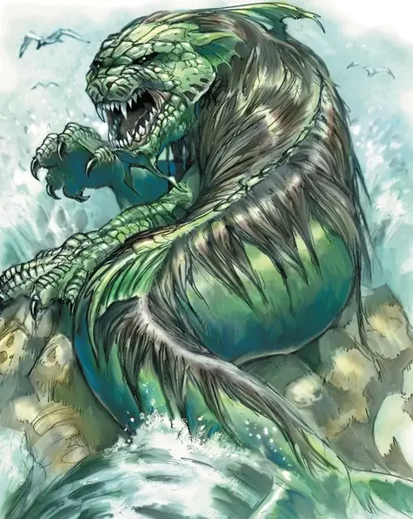

Морской лев
Sea Lion
Большой Монстр, без мировоззрения

Класс Доспеха 15 (природный доспех)
Хиты 90 (12к10 + 24)
Скорость 10 футов, плавая 40 футов
| мод | спас | ||
|---|---|---|---|
| СИЛ | 17 | +3 | +3 |
| ЛОВ | 15 | +2 | +2 |
| ТЕЛ | 15 | +2 | +2 |
| мод | спас | ||
|---|---|---|---|
| ИНТ | 3 | −4 | −4 |
| МДР | 12 | +1 | +1 |
| ХАР | 8 | −1 | −1 |
Навыки Восприятие +4, Скрытность +5
Чувства пассивное Восприятие 14
Опасность 5 (1800 опыта)
Бонус мастерства +3
Особенности
Амфибия. Морской лев может дышать и воздухом и под водой.
Тонкий нюх. Морской лев совершает с преимуществом проверки Мудрости (Восприятие), полагающиеся на нюх.
Тактика стаи. Морской лев совершает с преимуществом броски атаки по существу, если как минимум один союзник льва находится в пределах 5 футов от этого существа, и этот союзник дееспособен.
Прыжок в воде. Проплыв 10 футов, морской лев может выпрыгнуть из воды на высоту до 25 футов или пролететь расстояние до 25 футов над водой.
Действия
Мультиатака. Морской лев совершает три атаки: одну укусом и две когтями.
Укус. . Рукопашная атака оружием: +6 к попаданию, досягаемость 5 футов, одна цель. Попадание: 12 (2к8 + 3) колющего урона.
Когти. . Рукопашная атака оружием: +6 к попаданию, досягаемость 5 футов, одна цель. Попадание: 12 (2к8 + 3) рубящего урона.
Описание
Морской лев — это страшное чудовище с головой и передними лапами льва, хвостом и нижней частью тела рыбы. Искатели приключений, спустившиеся под гору Белый Шлейф, могут обнаружить группу этих существ, запертых в водяной клетке.